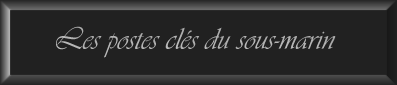
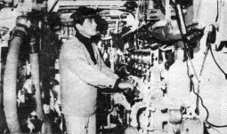
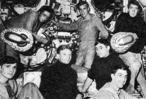
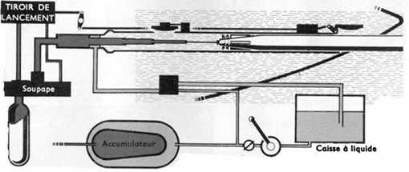
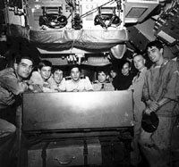
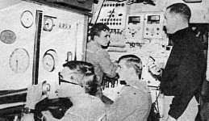

|
Propulsion/Energie
:
Elle se compose d'une combinaison conventionelle d'un système
diésel et électrique. Ce sont 2 moteurs électriques
JEUMONT
SCHNEIDER de 2600 BHP
alimentés par une
batterie de 160 éléments de type L qui fait fonctionner
les 2 hélices assurant la propulsion. Un schnorchel permet
le fonctionnement des deux groupes électrogènes diesels
SEMT PIELSTICK PA8 de 1 224 BHP
pour
la recharge de la batterie. Ces groupes sont suspendus élastiquement
pour éviter les vibrations et les bruits. Cette combinaison
permet d'atteindre une vitesse de 13.5 noeuds en surface et 15 noeuds
en plongée. ( Photo : J.P. Krintz : Lui-même
aux auxilliaires Oct. 67)
|
| |
|

Le
poste des torpilles : Le
système de lancement comporte un refouloir pneumatique à
quatre pistons qui pousse la torpille par la queue sur une longueur
de 5 m environ. Grâce à une large arrivée d'eau
derrière la torpille, au travers de la porte latérale,
le lancement est rendu à peu près indépendant
de l'immersion du sous-marin.L'utilisation du refouloir pneumatique
permet d'effectuer le lancement avec une discrétion optique
absolue et une excellente discrétion acoustique.

|
| |
Central
opération :
Le C.O recoit les informations de toutes les sources de détection
optique (périscope), acoustique ( hydrophone et sonar ), électromagnétique
( radar ) pour la direction de lancement des torpilles qui élabore
les éléments du but - calcule la trajectoire des torpilles
- les téléguide - donne l'ordre de mise à feu.
( Photo : J.P. Krintz : PCO de La
Minerve en 1967 avec Miglaccio, et le Lt Renard )
|
|
|

Sécurité
Plongée :
De
gauche à droite, on remarque, les barreurs de plongée
avant et arrière, l'électricien de central aux chasses
H.P. (250 bars) s'apprétant à manoeuvrer l'ouverture
des purges, le maître de central tenant le micro passerelle
en attente de l'ordre d'immersion. On remarque également les
deux hydrogénomètres (taux H2) batterie 1/2 avant et
arrière parés en exercice voie d'eau. Sur le tableau
de sécurité plongée on distingue les manomètres,
l'indicateur d'assiette et d'angle de barre.
(Photo J.P Krintz : au fond QM mécano Nicolas et le Lt Agnus
Officier mécanicien)
|
|
|

{kind=link}
{kind=link}
{kind=link}